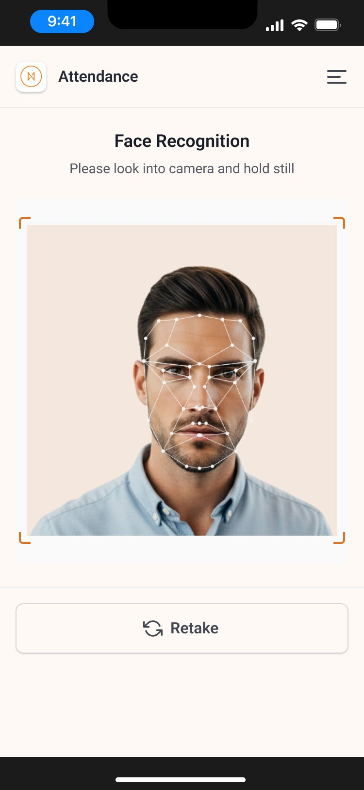
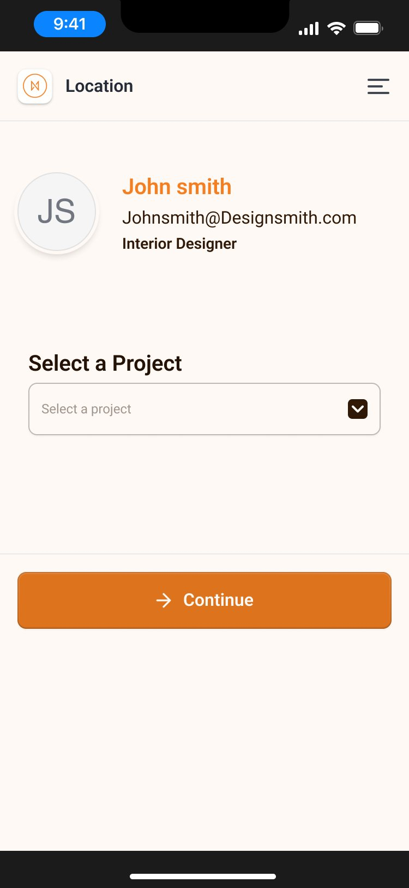
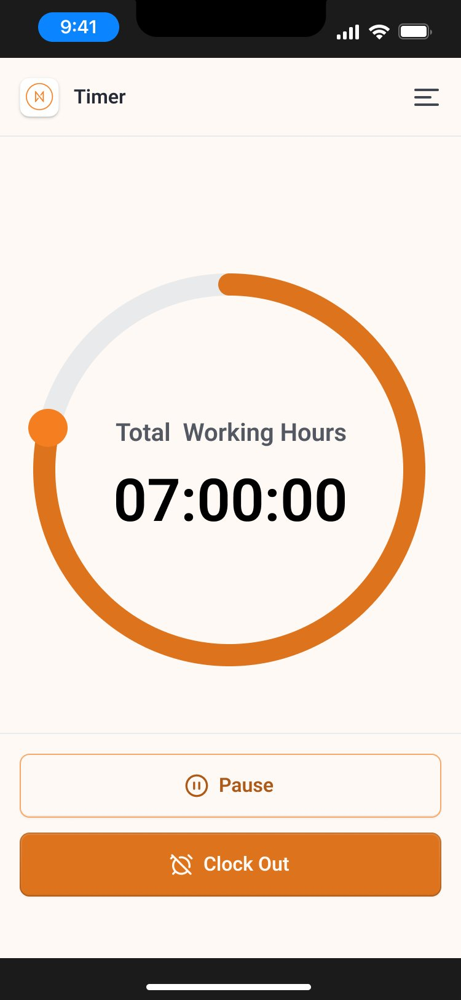

← All work
Face recognition attendance that never leaves a worker stuck
Workers clock in within seconds on a shared kiosk or their own phone, and always have a way through when a scan fails.
Role
UX/UI Designer: research, flows, UI
Surfaces
Tablet kiosk, mobile app, admin dashboard
Design system
Designsmith
Design goal
Clock-in in under 2 seconds
The problem
Clock-in apps are slow, unclear and stressful.
- Unclear scanning: no guidance on where to place your face or why a scan failed.
- Kiosk queues: slow recognition creates lines at shift start; passers-by trigger false scans.
- Privacy anxiety: people don't know what biometric data is stored.
- Dead ends: a failed scan leaves the worker stuck with no fallback.
Research
Competitors had strong recognition tech and weak feedback and recovery.
| Product | Strength | UX gap | Opportunity |
|---|---|---|---|
| Jibble | Fast mobile clock-in, geofencing | Confusing kiosk setup; struggles in low light | Kiosk mode built for high traffic |
| Truein | Offline mode, strong liveness | Dated, cluttered admin UI | Modern UI with offline resilience |
| Keka / Darwinbox | Full HRMS integration | Face scan buried in a heavy app | One-purpose, instant attendance |
| Buddy Punch | Simple setup | Weak real-time scan feedback | Clear live feedback and privacy cues |
Users
Three people, three different jobs.
| Persona | Need | Pain today |
|---|---|---|
| Shift worker | Clock in within 1–2 seconds, even offline | Failed scans delay shift start |
| Floor manager | A kiosk that runs hands-free all day | Freezes, lockouts, queues |
| HR / payroll admin | See anomalies at a glance | Digging through raw logs |
Key flow
Every kiosk clock-in ends recorded, even when the scan fails.
01IdleKiosk waits, ready for the next worker
02Auto framingAnimated reticle guides face position
03Match?Green check and chime when matched
04FallbackAfter 2 failed scans, a PIN option appears
05RecordedAction pre-selected from the worker's shift
Enrollment: plain-language consent, guided oval capture with turn-left/right liveness, instant confirmation.
Mobile clock-in: geofence check, liveness selfie, and a "Queued for sync" badge when offline.



Mobile: face scan, project, then a working-hours timer with pause and clock out.
Design system
Built on Designsmith, so effort went into the hard problems, not rebuilding buttons.
- Foundations: colour, type and spacing tokens kept kiosk, mobile and admin consistent.
- Reused: buttons, inputs, modals, badges, tables and navigation.
- Extended: scan reticle states, clock-in buttons, sync badges and the fallback PIN modal, all built from the same tokens.
- Status: amber = adjust, green = matched, red = failed, always paired with an icon and sound.
Decisions
Key design decisions
| Decision | Why |
|---|---|
| Animated reticle instead of instruction text | Workers glance, they don't read, mid-shift |
| Sound + icon + colour for every result | Works on noisy floors and for colour-blind users |
| Fallback after 2 failed scans | No one misses a shift start because of glare or a mask |
| Shift-aware pre-selected action | One less tap at a busy entrance |
| Plain-language privacy screen | Builds trust: the face is stored as encrypted data, not a photo |
| Large type and touch targets on the kiosk | Usable with gloves and at arm's length |
Outcome
Designed for speed, trust and recovery across three surfaces.
- Designed for sub-2-second clock-in, no dead-end failures, and offline continuity.
- One design system let kiosk, mobile and admin work as one product.
What I learned: in biometric products, the failure state matters as much as the success state.
← All work
Next case study
Intrakore Design System →